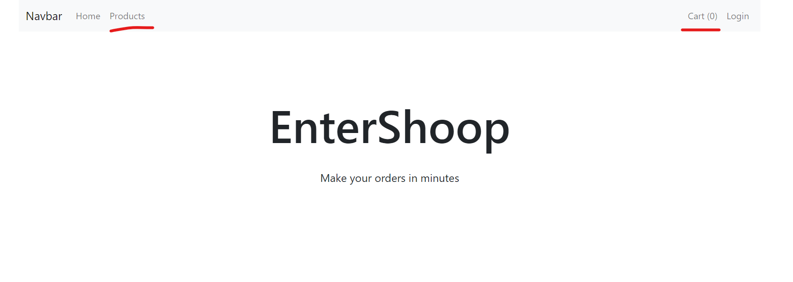
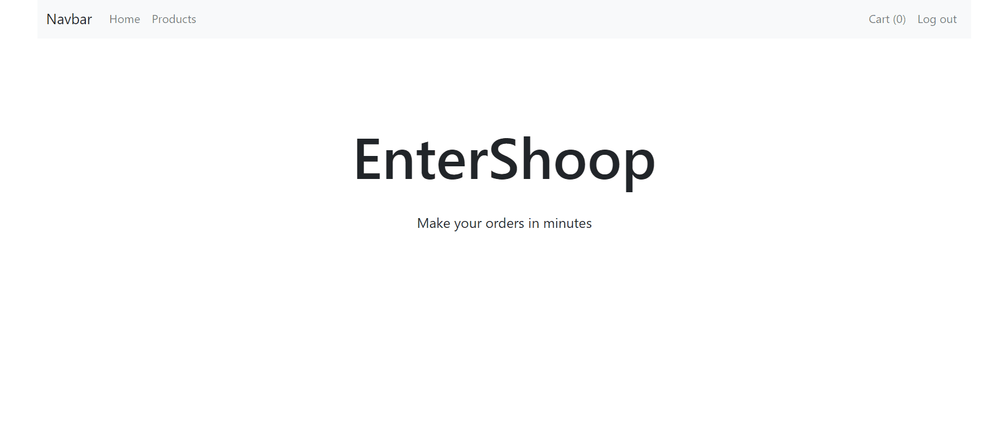

Курсова робота. Створення корзини.
1. Додайте нові компоненти для показу товарів користувачу. Додайте відповідні посилання у меню та налаштуйте для них routing.


Компонентa OrderProducts
html для orderProducts.html (компоненти OrderProducts)
<div class="orderProducts">
<h1 class="text-center">Products</h1>
<div class="d-flex flex-wrap justify-content-around mt-5">
<!--нова коммпонента для відображення товарів (order-card)-->
</div>
</div>
Vue.js для компонента OrderProducts
<script>
const OrderProducts = {
template: orderProducts.data,
methods: {
getAllProducts(){
db.collection("products")
.get()
.then( res => {
data.products = [];
res.forEach( element => {
const product = {
...element.data(),
id: element.id
};
data.products.push(product)
})
this.$forceUpdate();
})
}
},
components: {
OrderProductCard //птрібно стоврити нову копоненту для відображення товарів
},
mounted: function(){
this.getAllProducts();
}
}
</script>
2. Створіть нову компоненту для відображення товарів для покупця у вигляді картки. Додайте кнопку додати у корзину.
3. У корзині зберігайте лише id товару. У компоненті для корзини створіть метод який витягуватиме товари по їх id
<script>
db.collection('products')
.where(firebase.firestore.FieldPath.documentId(), 'in', ["id_1","id_2","id_3"])
.get()
.then( res => {
console.log(res);
})
</script>